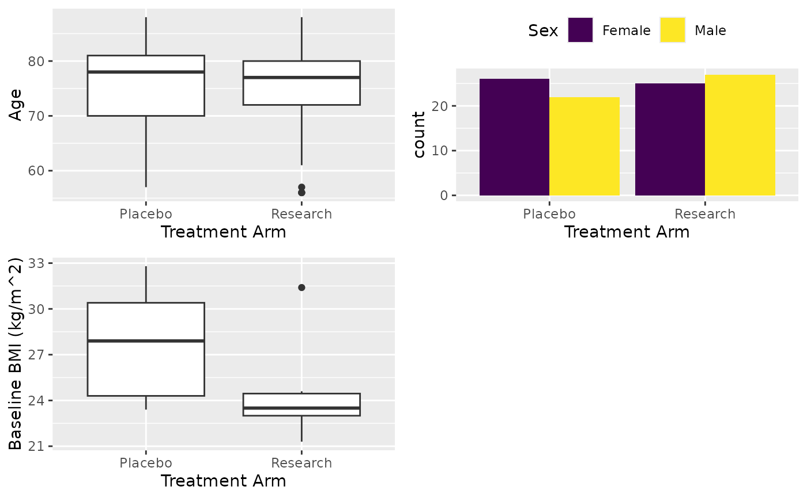
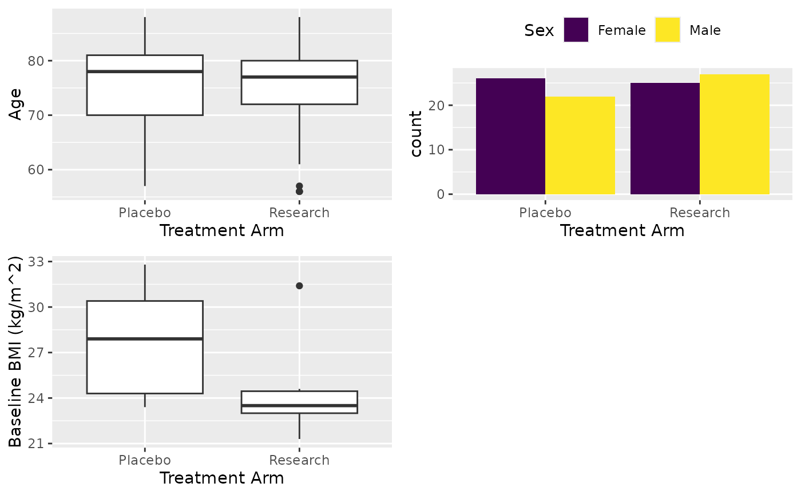

This is a wrapper function of stat_tab, allowing for grouped variables,
split statistics table by `row_split` variable.
Usage
cttab(x, ...)
# Default S3 method
cttab(
x,
data,
group = NULL,
row_split = NULL,
total = TRUE,
select = NULL,
add_missing = TRUE,
add_obs = TRUE,
digits = getOption("cctu_digits", default = 3),
digits_pct = getOption("cctu_digits_pct", default = 0),
rounding_fn = signif_pad,
subjid_string = getOption("cctu_subjid_string", default = "subjid"),
print_plot = getOption("cctu_print_plot", default = TRUE),
render_num = getOption("cctu_render_num", default = "Median [Min, Max]"),
logical_na_impute = c(FALSE, NA, TRUE),
blinded = getOption("cctu_blinded", default = FALSE),
...
)
# S3 method for class 'formula'
cttab(
x,
data,
total = TRUE,
select = NULL,
add_missing = TRUE,
add_obs = TRUE,
digits = getOption("cctu_digits", default = 3),
digits_pct = getOption("cctu_digits_pct", default = 0),
rounding_fn = signif_pad,
subjid_string = getOption("cctu_subjid_string", default = "subjid"),
print_plot = getOption("cctu_print_plot", default = TRUE),
render_num = getOption("cctu_render_num", default = "Median [Min, Max]"),
logical_na_impute = c(FALSE, NA, TRUE),
blinded = getOption("cctu_blinded", default = FALSE),
...
)Arguments
- x
Variables to be used or a
formulafor summary table. Ifxis aformula, then thegroupvariable should be provided at the right had side, use1if there's no grouping variable. Androw_splitshould also be provided on the right hand side of the formula and separate it using|with grouping variable. For example,age + sex ~ treat|cycleorage + sex ~ 1|cyclewithout grouping. See details.- ...
Not used.
- data
A
data.framefrom which the variables invarsshould be taken.- group
Name of the grouping variable.
- row_split
Variable that used for splitting table rows, rows will be split using this variable. Useful for repeated measures.
- total
If a "Total" column will be created (default). Specify
FALSEto omit the column.- select
a named vector with as many components as row-variables. Every element of `select` will be used to select the individuals to be analyzed for every row-variable. Name of the vector corresponds to the row variable, element is the selection.
- add_missing
If missing number and missing percentage will be reported in the summary table, default is `TRUE`. This will also produce data missingness report if set
TRUE. Seereport_missingfor details.- add_obs
Add an observation row (default).
- digits
An integer specifying the number of significant digits to keep, default is 3.
- digits_pct
An integer specifying the number of digits after the decimal place for percentages, default is 0.
- rounding_fn
The function to use to do the rounding. Defaults is
signif_pad. To round up by digits instead of significant values, set it toround_pad.- subjid_string
A character naming the column used to identify subject, default is
"subjid".- print_plot
A logical value, print summary plot of the variables (default).
- render_num
A character or vector indicating which summary will be reported, default is "Median [Min, Max]". You can change this to "Median [Q1, Q3]" then the median and IQR will be reported instead of "Median [Min, Max]". Use
options(cctu_render_num = "Median [IQR]")to set global options. See detailsrender_numericnum_stat.- logical_na_impute
Impute missing values with
FALSE(default),NAkeep as it is, orTRUE. The nominator for the logical vector is the number ofTRUE. ForFALSEorTRUE, the denominator will be all values regardless of missingness, but the non-missing number used as denominator forNA. Set it toFALSEif you want to summarise multiple choice variables andNAfor Yes/No type logical variables but don't want No in the summary. You can used a named list inxand stack multiple choice in one category.- blinded
A logical scalar, if summary table will be report by
group(default) or not. This will ignoregroupif set toTRUEand grouping summary will not be reported.
Details
1. Parameter settings with global options
Some of the function parameters can be set with options. This will have an global
effect on the cctab function. It is an ideal way to set a global settings
if you want this to be effective globally. Currently, you can set digits,
digits_pct, subjid_string, print_plot, render_num and
blinded by adding "cctu_" prefix in the options. For example,
you can suppress the plot from printing by setting options(cctu_print_plot = FALSE).
2. Formula interface
There are two interfaces, the default, which typically takes a variable vector from
data.frame for x, and the formula interface. The formula interface is
less flexible, but simpler to use and designed to handle the most common use cases.
For the formula version, the formula is expected to be a two-sided formula. Left hand
side is the variables to be summarised and the right hand side is the group and/or split
variable. To include a row splitting variable, use | to separate the row splitting
variable after the grouping variable and then the row split variable. For example,
age + sex ~ treat|visit. The right hand side of the formula will be treated as a grouping
variable by default. A value of 1 should be provided if there is no grouping variable,
for example age + sex ~ 1 or age + sex ~ 1|visit by visit.
3. Return
A summary table with some attributes will be reutned, a method has been writen for rbind.
So you can use rbind to combine two tables without losing any attributes. An attribute
position will be used to produce a nice table. There are three 4 possible values for each
rows. Row name printed as the first column in the word table. Some styles will be applied to each
row based on the position attributes.
0 | indicates the row will be in bold, spanned through all columns and a grey background in the word |
1 | indicates the row will be in bold |
2 | the row will be in bold and spanned through all columns |
3 | indicates the row of the first column will be indented |
Methods (by class)
cttab(default): The default interface, wherexis adata.frame.cttab(formula): The formula interface, wherexis aformula.
Examples
# Read data
dt <- read.csv(system.file("extdata", "pilotdata.csv", package="cctu"))
dlu <- read.csv(system.file("extdata", "pilotdata_dlu.csv", package="cctu"))
clu <- read.csv(system.file("extdata", "pilotdata_clu.csv", package="cctu"))
dt$subjid <- substr(dt$USUBJID, 8, 11)
# Apply variable attributes
dt <- apply_macro_dict(dt, dlu, clu, clean_names = FALSE)
# Extract form data to be analysed
df <- extract_form(dt, "PatientReg", vars_keep = c("subjid"))
########################################################
# Simple analysis no group and variable subset
######################################################
# Variable as a vector
X <- cttab(x = c("AGE", "SEX", "BMIBL"),
data = df,
select = c("BMIBL" = "RACEN != 1"))
# Variable as a formula, equivalent to above
X1 <- cttab(AGE + SEX + BMIBL ~ 1,
data = df,
select = c("BMIBL" = "RACEN != 1"))
 #############################################
# Analysis by group
############################################
# Variable as a vector
X <- cttab(x = c("AGE", "SEX", "BMIBL"),
group = "ARM",
data = df,
select = c("BMIBL" = "RACEN != 1"))

############################################
# Analysis by group and cycles
############################################
df <- extract_form(dt, "Lab", vars_keep = c("subjid", "ARM"))
X <- cttab(x = c("AST", "BILI", "ALT"),
group = "ARM",
data = df,
row_split = "AVISIT",
select = c("ALT" = "PERF == 1"))
#############################################
# Analysis by group
############################################
# Variable as a vector
X <- cttab(x = c("AGE", "SEX", "BMIBL"),
group = "ARM",
data = df,
select = c("BMIBL" = "RACEN != 1"))

############################################
# Analysis by group and cycles
############################################
df <- extract_form(dt, "Lab", vars_keep = c("subjid", "ARM"))
X <- cttab(x = c("AST", "BILI", "ALT"),
group = "ARM",
data = df,
row_split = "AVISIT",
select = c("ALT" = "PERF == 1"))
 ############################################
# Group variables
############################################
df <- extract_form(dt, "PatientReg", vars_keep = c("subjid"))
base_lab <- extract_form(dt, "Lab", visit = "SCREENING", vars_keep = c("subjid"))
base_lab$ABNORMALT <- base_lab$ALT > 22.5
var_lab(base_lab$ABNORMALT) <- "ALT abnormal"
base_lab$ABNORMAST <- base_lab$AST > 25.5
var_lab(base_lab$ABNORMAST) <- "AST abnormal"
df <- merge(df, base_lab, by = "subjid")
X <- cttab(x = list(c("AGE", "SEX", "BMIBL"),
"Blood" = c("ALT", "AST"),
"Patients with Abnormal" = c("ABNORMAST", "ABNORMALT")),
group = "ARM",
data = df,
select = c("BMIBL" = "RACEN != 1",
"ALT" = "PERF == 1"))
############################################
# Group variables
############################################
df <- extract_form(dt, "PatientReg", vars_keep = c("subjid"))
base_lab <- extract_form(dt, "Lab", visit = "SCREENING", vars_keep = c("subjid"))
base_lab$ABNORMALT <- base_lab$ALT > 22.5
var_lab(base_lab$ABNORMALT) <- "ALT abnormal"
base_lab$ABNORMAST <- base_lab$AST > 25.5
var_lab(base_lab$ABNORMAST) <- "AST abnormal"
df <- merge(df, base_lab, by = "subjid")
X <- cttab(x = list(c("AGE", "SEX", "BMIBL"),
"Blood" = c("ALT", "AST"),
"Patients with Abnormal" = c("ABNORMAST", "ABNORMALT")),
group = "ARM",
data = df,
select = c("BMIBL" = "RACEN != 1",
"ALT" = "PERF == 1"))